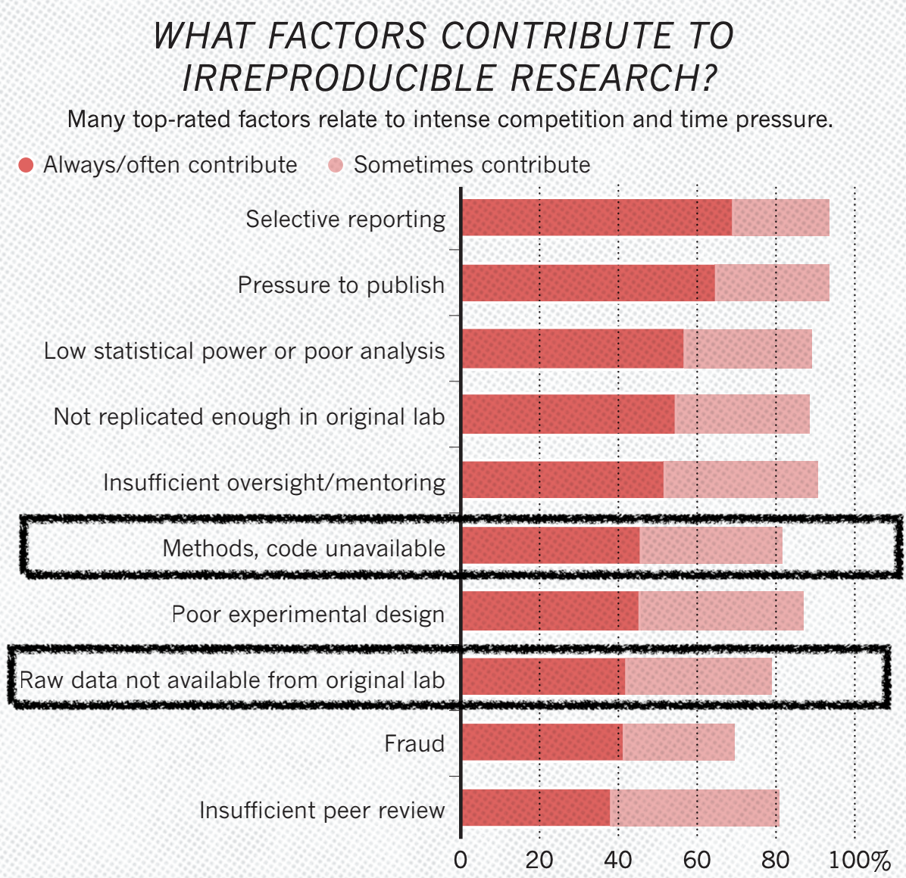

library(tidyverse)
data <- read_rds("C:/Users/usuario/Downloads/sidra_4092_arrumado.rds")
dados <- dados |>
filter(ano == max(ano))
dados |>
group_by(uf) |>
mutate(diferenca = perc_desocupacao - last(perc_desocupacao)) |>
ungroup() |>
mutate(uf = fct_reorder(uf, diferenca)) |>
ggplot(aes(x = perc_desocupacao, y = uf)) +
geom_point(aes(color = trimestre_codigo)) +
theme_light()4 Reprodutibilidade e estruturação de projeto
Nesta aula, o objetivo é apresentar o conceito de reprodutibilidade, e apresentar abordagens e ferramentas para estruturar projetos em ciência de dados, buscando garantir a reprodutibilidade dos resultados.
4.1 Introdução à Reprodutibilidade
“Reprodutibilidade é como escovar os dentes. Isso é bom para você, mas leva tempo e esforço. Depois de aprender, torna-se um hábito”. - Irakli Loladze, em pesquisa conduzida por Baker (2016).
A reprodutibilidade é um conceito central na ciência, embora não tenha uma definição única e comum (Gundersen 2021). Ao fazer um levantamento sobre o conceito de reprodutibilidade, Gundersen (2021) elaborou a seguinte definição:
“Reproducibility is the ability of independent investigators to draw the same conclusions from an experiment by following the documentation shared by the original investigators.”
Tradução livre:
“Reprodutibilidade é a capacidade de investigadores independentes chegarem às mesmas conclusões de um experimento ao seguir a documentação compartilhada pelos investigadores originais.”
A definição prática de reprodutibilidade é frequentemente associada à capacidade de reproduzir os resultados de uma pesquisa a partir dos dados brutos e do código utilizado.
De acordo com Baker (2016), a partir de um questionário realizado pela revista Nature sobre reprodutibilidade com mais de 1500 pesquisadores, vários fatores contribuem para pesquisas não reprodutíveis, como a não disponibilização de códigos, métodos e dados brutos. A figura abaixo apresenta os fatores mais citados pelos respondentes:

4.1.1 Exercício
- Reflita sobre a seguinte pergunta: Como você acha que a reprodutibilidade está relacionada ao seu trabalho? Se possível, discuta em grupo e posteriormente compartilhe com a turma suas ideias.
4.2 Boas práticas em projetos de análise de dados
Para aumentar a chance de desenvolver um projeto de análise de dados que seja reprodutível, algumas boas práticas podem ser adotadas, como:
não utilizar caminhos absolutos
evitar o uso de caracteres especiais em caminhos, variáveis e nomes de colunas
armazenar os arquivos de maneira consistente
registrar quais são as dependências (versões do R e dos pacotes utilizados)
documentar as análises realizadas
controlar as versões dos arquivos por meio de ferramentas como o Git e GitHub.
compartilhamento de dados brutos, códigos e documentação
Uma prática que pode ajudar a checar a reprodutibilidade de uma análise de dados é solicitar que outra pessoa que trabalha com você tente reproduzir os resultados a partir dos códigos, dados brutos e documentação (Markowetz 2015).
4.2.1 Exercício
Você já teve alguma experiência em que a falta de reprodutibilidade foi um problema? Se sim, o que você aprendeu com essa experiência?
Considerando a seguir e a discussão feita em sala, o que você mudaria no código a seguir?
4.3 Estrutura de projetos
Projetos estruturados são essenciais para a reprodutibilidade na ciência de dados. Ferramentas como projetos do RStudio, pacotes em R, controle de versão com Git e GitHub, relatórios reprodutíveis com Quarto, {renv} e {targets} ajudam a organizar o trabalho, gerenciar dependências e automatizar processos, aumentando as chances que outras pessoas posam reproduzir os resultados a partir dos códigos e dados brutos. Ao adotar essas práticas, é possível reduzir erros, aumentar a confiabilidade e promover uma ciência mais transparente e colaborativa.
A seguir, vamos apresentar algumas dessas ferramentas e práticas!
4.4 Projetos no RStudio
Em breve
4.5 renv: gerenciando dependências
Em breve
4.6 Introdução ao targets
Em breve
4.7 Materiais
Este material foi desenvolvido com base na aula Introdução ao conceito de reprodutibilidade do curso Relatórios reprodutíveis com R, ministrado por Beatriz Milz no programa de Verão do IME-USP.
4.8 Referências citadas
Baker, Monya. 2016. «1, 500 scientists lift the lid on reproducibility». Nature 533 (7604): 452–54. https://doi.org/10.1038/533452a.
Gundersen, Odd Erik. 2021. «The fundamental principles of reproducibility». Philosophical Transactions of the Royal Society A: Mathematical, Physical and Engineering Sciences 379 (2197): 20200210. https://doi.org/10.1098/rsta.2020.0210.
Markowetz, Florian. 2015. «Five selfish reasons to work reproducibly». Genome Biology 16 (1). https://doi.org/10.1186/s13059-015-0850-7.